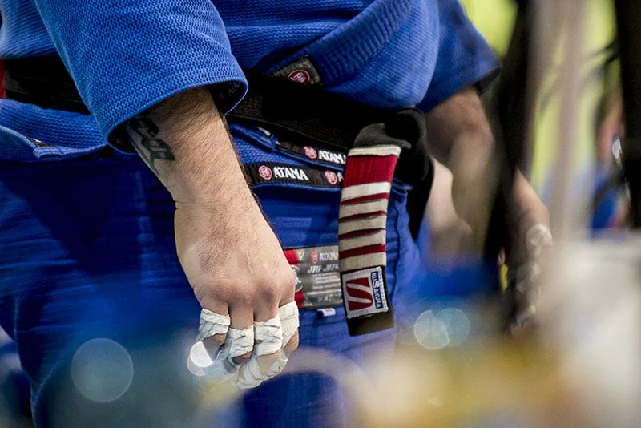

Comrades Jiu Jitsu Strömstad är en kampsportsförening baserad i Strömstad, Sverige, som specialiserar sig på brasiliansk jiu-jitsu, brottning och MMA. Comrades Jiujitsu startade 2019 av eldsjälar som brinner för kampsport och föreningen har sedan dess växt stadigt.

Föreningen erbjuder träning i både självförsvar och sportorienterad kampsport för personer i alla åldrar och erfarenhetsnivåer. Vi strävar efter en inkluderande miljö där alla oavsett ålder, kön, religion, sexuell läggning eller funktionsvariation kan delta efter sin förmåga.